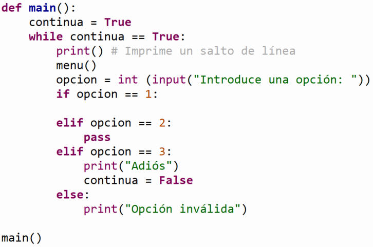

Ejercicios:
Implementa las
siguientes funciones en Python:
-
La función
factores_de (x)
que recibe un entero x positivo. La función deberá mostrar
en pantalla los
factores enteros del número (es decir, los números enteros
positivos menores a x cuya división tenga residuo
0). Utiliza el ciclo for.
(Pista: Usa la operación residuo %).
Ejemplos:
factores_de (12):
-
12 % 1 == 0
- 12 % 2 == 0
- 12 % 3 == 0
-
12 % 4 == 0
-
12 % 5 == 2
-
12 % 6 == 0
- 12 % 7 == 5
-
12 % 8 == 4
-
12 % 9 == 3
-
12 % 10 == 2
-
12 % 11 == 1
factores_de (12) desplegará:
1
2
3
4
6
factores_de (100) desplegará:
1
2
4
5
10
20
25
50
factores_de (39) desplegará:
1
3
13
-
La función
pares (x)
que recibe un entero x positivo. La función deberá mostrar
en pantalla los numeros pares positivos menores o iguales al número
x.
(Pista: Usa la operación residuo %)
Ejemplos:
pares (9):
-
1 % 2 == 1
- 2 % 2 == 0
- 3 % 2 == 1
- 4 % 2 == 0
- 5 % 2 == 1
- 6 % 2 == 0
- 7 % 2 == 1
- 8 % 2 == 4
- 9 % 2 == 1
pares (9) desplegará:
2
4
6
8
pares (12) desplegará:
2
4
6
8
10
12
-
La función
menu ()
que despliegue el siguiente menú en pantalla:
1. Factores de
2. Pares
3. Salir
-
La función
main ()
que utilice la función menu para desplegar el menú
correspondiente y, de acuerdo a la opción seleccionada por el
usuario, le de la oportunidad de ejecutar cualquiera de las
funciones que han sido construidas.
-
Utiliza
la estructura de control if anidada (o
if-elif-else).
-
La
captura de datos y la validación
de los parámetros de entrada debe realizarse dentro de la
función main().
-
Debes
utilizar un ciclo while para repetir el programa
hasta que el usuario elija la opción de salir (opción 3).
-
Utiliza la siguiente estructura para
definir el main:

Instrucciones finales:
-
En el
script principal
manda llamar a la función main.
-
Guarda tu archivo como:
D_matricula.py